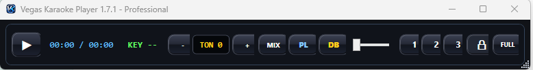

Funzionalità complete
Vegas Karaoke Player è progettato come workstation karaoke per uso live: player, archivio, database, mixer MIDI, schermi multipli, audio professionale, creazione karaoke e pannello DJ online.
Mini Player
Barra compatta per notebook, monitor piccoli e lavoro live con minimo ingombro.
Database basi
Importa archivi, ricerca, filtra, unisci alias, gestisci cantanti, produttori e stati.
Player principale
Comandi live, playlist, tonalità, mix, monitor 1/2/3, fullscreen e database rapido.
Explorer File
Ricerca e preascolto, filtri formati, importazione cartelle e selezione rapida.
Schermo karaoke
2 o 4 righe, stile classico o VanBasco, font, colori, sfondi, logo e GIF.
Controlli live
Tasto rapido prossima canzone, supporto pedale MIDI e flusso pensato per serate.
Hardware audio
ASIO/WASAPI, preascolto, microfono, buffer, test uscita e routing dedicato.
Microfono e VST
Preset voce, effetti, plugin VST/VST2/VST3 dove disponibili e monitoraggio.
Creazione Karaoke IA
Separazione voce/base, trascrizione, LRC, MP3 con testo interno e MP4 karaoke.
YouTube Plugin
Strumento per contenuti propri, autorizzati o con licenza compatibile. Uso sotto responsabilità dell'utente.
Jingle rapidi
Applausi, effetti, sigle, jingle personalizzati e invio al karaoke.
Spartito/Piano MIDI
Visualizzazione note MIDI e tastiera virtuale per musicisti e prove.
Multitraccia Band
Tracce separate, mute, solo, pan, routing, testo, export MP3/MP4 e sync.
Pannello DJ Online
Prenotazioni browser senza app, QR Code, playlist live e gestione richieste.
Licenze
Home e Professional con assistenza chiara, aggiornamenti e attivazione tramite chiave.

Mini Player
Modalità compatta per controllo live con minimo ingombro.

Database archivio
Gestione database, cantanti, filtri e importazione cartelle.

Audio professionale
ASIO, microfono, routing, uscite dedicate e VST.

Creazione Karaoke IA
Generazione karaoke da MP3/MP4 con testo sincronizzato.

Multitraccia Band
Progetti multitraccia con routing e export.

Karaoke fullscreen
Testo grande, leggibile e personalizzabile.